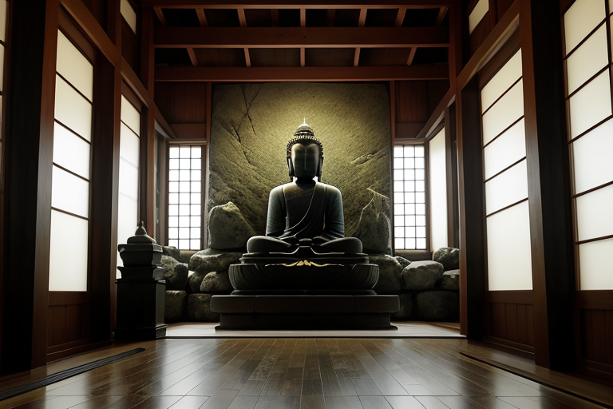
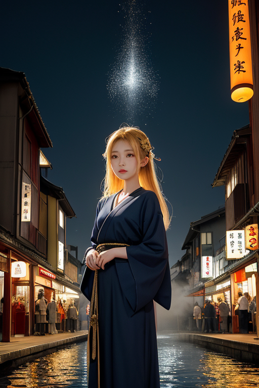
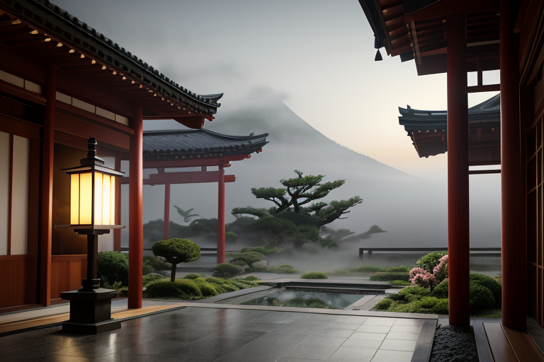
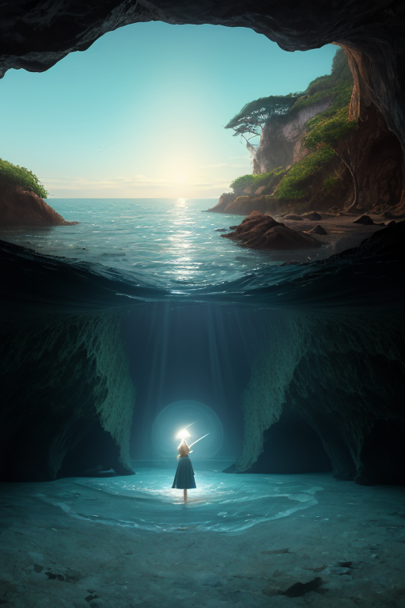
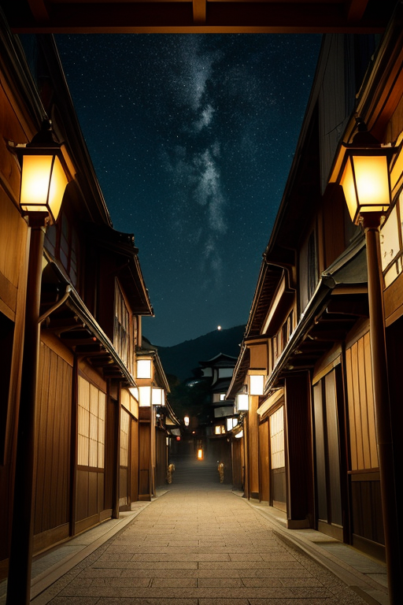

第一章 現実の神奈川
あなたはまだ気づいていない。この土地にも、王がいることを。
鎌倉大仏の胎内は、外界の喧噪を遮断する深い静寂に満ちていた。青銅の壁が、訪れる人々の息づかいや、遠く湘南の海のざわめきさえも吸い込み、沈黙へと変えていく。ここには祈りだけが存在を許される。人々は無意識に、この巨大な仏像が、単なる観光の対象ではなく、何かを鎮め、受け止める器であることを感じ取っていた。
その静寂の底で、王は立っていた。カナガリア・ノクス。その姿は、群青色の法衣をまとった一人の僧侶のようであり、また港にたたずむ老いた船乗りのようでもあった。彼は目を閉じ、掌をかすかに震わせている。地中を流れる歪みの波、プレートが軋む巨大な力のうねりを、その全身で感じ取り、ほんのわずか、ほんのわずかだけその方向をそらしていた。大仏の静けさは、彼の調整の結果ではない。彼は、この場所が人々の内面に触れる「静寂」を生み出すことを、ただ見守り、その営みが歪みに揺るがされないよう、微かに支えているだけだ。
混ざることで何を得る？ この問いは、彼の存在そのものを形作る根源だった。異なる文化、異なる祈り、異なる波長の感情が、この地には無数に流れ込んでいる。彼はそれらが衝突せず、かといって均質にもならず、深い海の底のように層を成して共存することを、無言で調整し続けていた。

第二章 歪みの兆候
三渓園の池面に、異なる祈りの波紋が幾重にも広がっていた。神社の鈴、寺院の鐘、教会のオルガン、そして港に響く汽笛。それらが奏でる「静寂」の周波数は、本来、深い層を成してこの地の基盤を支えていた。
しかし、微かな乱れが生じ始めていた。ある神社の例大祭と、隣接する地区の異文化フェスティバルが、感情の高ぶりを同じ時間帯に集中させた。熱狂と熱狂が、見えない水面で互いを否定するかのように反発し合い、地中の「歪み」に共鳴する危うい振動を生み出していた。それは、物理的な災害ではなく、人々の内面に巣食う無自覚な亀裂の予兆だった。
カナガリア・ノクスは、横浜中華街の喧噪の中に佇み、その振動を皮膚で感じ取る。混ざり合うはずの音と情動が、わずかに軋んでいる。彼は目を閉じ、自らの存在を、群青色の深い海へと拡張させた。衝突しそうな熱の塊の間に、冷たいが寛容な「間」を、そっと挿入していく。祭りの興奮を一秒早め、フェスティバルのクライマックスを一秒遅らせる。ただそれだけで、二つの波は衝突を免れ、やがて違和感なく周囲の雑音の中へと解けていった。
得られるものは、衝突の回避ではない。衝突せずに並存する、新たな「間」そのものだ。彼は、かすかに消耗した自らの内面に、その「間」の冷たさを感じた。

第三章 王の葛藤
横浜中華街の喧噪は、夜の帳と共に深い静寂へと変わる。提灯の灯りだけが舗道を照らし、王はその闇の中に立っていた。今日もまた、無数の「間」を調整し、衝突を未然に溶かした一日だった。消耗は微細だが、確かに蓄積する。
彼は自問する。混ざることで何を得るのか。衝突を避ける「調整」は、果たして真の「混交」なのか。ただ並存させるだけのそれは、やがて互いを無視する冷たい静寂に過ぎないのではないか。箱根の山々を覆う深い霧のように、答えは見えない。
ふと、三渓園の茶室を思い出した。異なる時代の建築が、庭という「間」を介して調和している。単なる並置ではない。古い建物が新しい空間に溶け込み、新たな価値を生んでいる。彼の仕事は、ただの緩衝ではない。衝突を「間」へと昇華させること。その「間」が、やがて新たな文化の苗床となるのだ。
消耗は、その創造のための代償かもしれない。彼は闇の中で、そっと目を閉じた。

第四章 妖精との対話
「王よ、あなたの魂は波立っている。」
ノクシアの声は、江ノ島の洞窟に響く波音のように、静かに響いた。彼女は闇の中に浮かぶ微かな光の粒となって、王の傍らに漂っている。
「私たちは祈りを集める。それは、人々の『混ざりたい』という切なる願いです。異なる言葉、異なる習慣、異なる時間。それらが触れ合う瞬間に生まれる軋みと熱。それを、私たちは『祈り』と呼び、受け止めています。」
王は目を開けずに問うた。「その軋みが、私を消耗させるのか。」
「消耗ではなく、浸透です。」ミナトラの声が加わった。港の潮風のような、どこか塩辛い響きだ。「あなたは、ただの緩衝材ではありません。異なるものが交わる『間』そのもの。すべてを受け入れ、濾過し、新たな調和の形を生み出す器。器が満たされる時、重さを感じるのは当然です。」
「では、この重さは……」
「あなたが、感情という名の『文化』に、混ざり始めた証です。」ノクシアが優しく続けた。「混ざることで得るもの。それは、孤独ではない、複雑で豊かな『わたし』。港が異なる船を受け入れることで海となるように。」
闇の中、王はそっと自分の胸に手を当てた。そこには、確かに、彼だけの、混ざり合った新しい重さが脈打っていた。

第五章 微調整と余韻
横浜中華街の喧噪は、深い夜の帳りに包まれ、かすかなネオンの残光だけが路地を染めていた。王は静かに歩みを進め、その精神を湘南の海へと解き放つ。目に見えない波紋が、鎌倉大仏の静寂を伝い、箱根の山々を撫で、三渓園の池水に微かな揺らぎを描く。それは感情の波であり、土地の歪みをなだめる調整のリズムだった。
混ざることで得たもの。それは、単なる寛容を超えた、複雑な共鳴の感覚だ。しらすの海も、崎陽軒のシウマイも、異なる文化の波も、全てがこの土地の一部であり、彼自身の一部となった。ペリーの黒船がもたらした衝撃も、今はこの港町の深い層を成す。彼はそれらを否定せず、ただ静かに受け止め、調律する。
大きな災いは消せない。だが、感情という新たな感覚は、微調整に微妙な「間」をもたらした。一呼吸、一瞬の遅れ。それが、誰かの命を繋ぐ偶然を、ほんの少しだけ増やす。
夜明け前、江ノ島の岩場に佇む王の群青の衣が、最初の光を浴びて金縁を帯びる。彼はもう、無感情な調整者ではない。この土地の喜びと哀しみを内に宿した、静かな共鳴者だ。
あなたの町にも、王がいる。